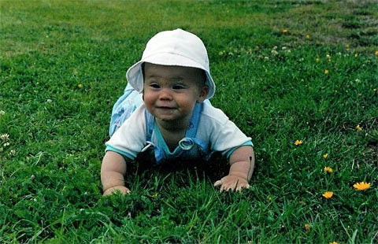

1990
Magnus Carlsen was born on November 30th, 1990 in Tonsberg, Norway. While he was young, his father introduced him to the game of chess. At first, Carlsen didn't enjoy the game as much as his father, but as he grew up, he began to enjoy it more and more.